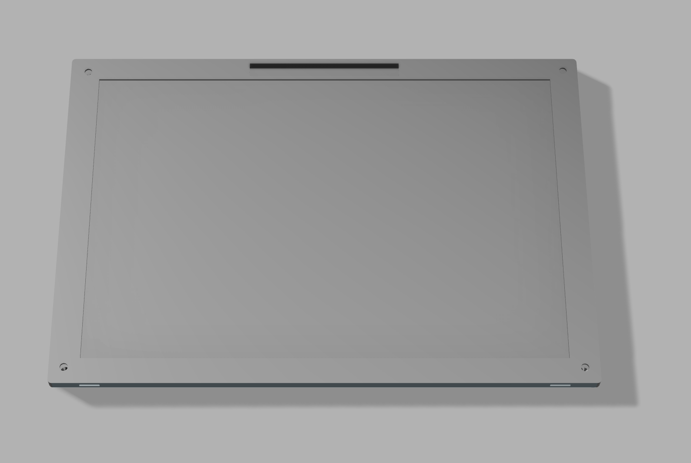
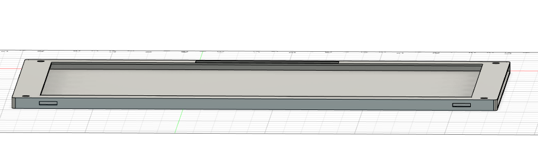
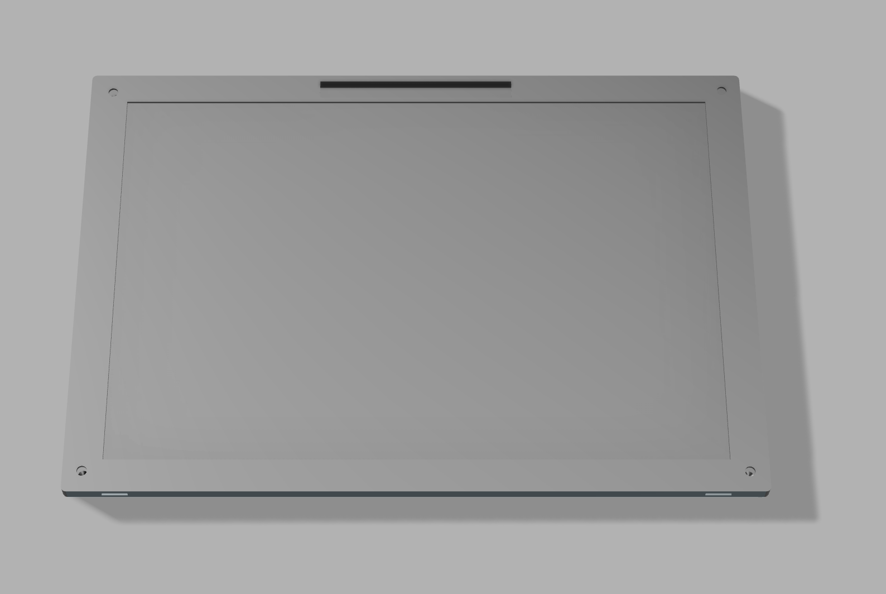
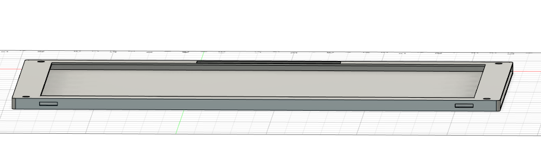

Goals for this week
In goals
My research and What i learned
In order to make a modular laptop, the case is the most crucial part because it dictates how everything is going to fit, be placed and the functionality
is designed off of the case, this will be focusing on revision and maximizing the functionality of the case, and what is within it.
The front case is designed for a modular keyboard to be able to fit into it,
 the reason we need a modular keyboard is first, if it breaks
you can easily replace it, there has been studies on how the keycap form factor plays into the user experience and decreasing arthrithis.
sculpted keycaps for example allow for the fingers to rest higher on the keyboard. this allows for a more confortable typing experience.
the size of the keyboard case is especially big
because if users want to integate a keyboard calculator into the equation, or a lcd screen
for multitasking uses, the keyboard case is designed to be able to fit that in. looking at the touchpad, the research that has been going into the
size of the touchpad is that risc-v is a relatively new archeticture, and the performance for it is not great. so to compensate for that we need a
bigger touchpad to make it unique from the rest and sell it to the general consumer who needs a laptop that they can enjoy, the bigger the touchpad
it means that the precision on the screen is widely increased. i have chosen a force touch touchpad that uses force sensors so that it can be clicked
from all angles and give haptic feedback. like with the case the touchpad is also modular so if it breaks you can easily replace it.
moving on
the reason we need a modular keyboard is first, if it breaks
you can easily replace it, there has been studies on how the keycap form factor plays into the user experience and decreasing arthrithis.
sculpted keycaps for example allow for the fingers to rest higher on the keyboard. this allows for a more confortable typing experience.
the size of the keyboard case is especially big
because if users want to integate a keyboard calculator into the equation, or a lcd screen
for multitasking uses, the keyboard case is designed to be able to fit that in. looking at the touchpad, the research that has been going into the
size of the touchpad is that risc-v is a relatively new archeticture, and the performance for it is not great. so to compensate for that we need a
bigger touchpad to make it unique from the rest and sell it to the general consumer who needs a laptop that they can enjoy, the bigger the touchpad
it means that the precision on the screen is widely increased. i have chosen a force touch touchpad that uses force sensors so that it can be clicked
from all angles and give haptic feedback. like with the case the touchpad is also modular so if it breaks you can easily replace it.
moving on  from the front case to the back case you can see that the case has many open areas. the back for example allows the actual pcb to go in
and slide into the mechanism, i have chosen an keyboard drawer rail in order for my pcbs to fit in the right area, this is a concept because the left and right
pcbs can go in but the middle cannot, looking to the sides we see that there is open ports that are pretty big,
the reason for the size of these ports is it is built
to accomidate all types of ports, all of the modular ports are connected to usbc, it will support ethernet, usbc to usbc, usbc to hdmi usbc to usb2.0
now for the research i am planning on using Slide Latches because these latches are foundationally simple, if you push the port far enough into the slot
it will click in place, pressing a button on the slide makes the slide, move back and allow the port to pop out.
onto the monitor
from the front case to the back case you can see that the case has many open areas. the back for example allows the actual pcb to go in
and slide into the mechanism, i have chosen an keyboard drawer rail in order for my pcbs to fit in the right area, this is a concept because the left and right
pcbs can go in but the middle cannot, looking to the sides we see that there is open ports that are pretty big,
the reason for the size of these ports is it is built
to accomidate all types of ports, all of the modular ports are connected to usbc, it will support ethernet, usbc to usbc, usbc to hdmi usbc to usb2.0
now for the research i am planning on using Slide Latches because these latches are foundationally simple, if you push the port far enough into the slot
it will click in place, pressing a button on the slide makes the slide, move back and allow the port to pop out.
onto the monitor
 , this is specially designed to be able to swap the lcd screens in easily and replace it easily out. the sides are wide open and allow the
lcd screen to be able to fit in.

the top of the case where the camera resides is intentially big so that any camera can fit in, and has a extra camera blocker in place
the bottom of the monitor case has two open holes because most lcd screens have wires either connected to a seperate controller board so this will help guide them in and
keep them stable.

types of mechanisms i have researched and which one i have picked for my laptop
Spring-Loaded Latches: These latches typically consist of a spring-loaded mechanism that engages with a corresponding slot or notch on the modular component.
When the component is inserted into the port, the latch automatically engages, holding the component securely in place. To remove the component, the latch
is typically released by pressing a button or lever.
Slide Latches: Slide latches involve a sliding mechanism that locks the modular component in place.
When the component is fully inserted into the port, the latch slides into position, preventing the component
from being pulled out accidentally. Releasing the latch usually involves sliding it back or pressing a release button.
Magnetic Latches: Some modular ports use magnetic latches to secure the components.
Magnets embedded in the port and the component attract each other, holding the component
firmly in place. To remove the component, it must be pulled with sufficient force to overcome the magnetic attraction.
Rotating Latches: Rotating latches involve a mechanism that rotates to lock the modular
component in place. When the component is fully inserted, the latch rotates into a locking position
, preventing the component from being removed unintentionally. Releasing the latch typically involves rotating it back to its original position.
I have chosen the slide latches because fundementally they are very simple and have not that many moving parts it will function as a button to push the port off
and when inserted latching in place.
so this concludes my CAD software of the project. this will allow me to create a functionionally case for usage
The type of battery that will be used in my laptop is a lithium ion battery because they are slim, relatively low weight
and offer exceptional capacity. the benefits of this over the others is that it is the most widely used battery so it will
be very reliable because it has tons of research.
i am also planning on buying a TN, out there there is not that many types of laptop screens to choose from except choosing the
quality, oled, and ips need a relatively good processor, which the archectiure of the processor does not support alot of
performance
, this is specially designed to be able to swap the lcd screens in easily and replace it easily out. the sides are wide open and allow the
lcd screen to be able to fit in.

the top of the case where the camera resides is intentially big so that any camera can fit in, and has a extra camera blocker in place
the bottom of the monitor case has two open holes because most lcd screens have wires either connected to a seperate controller board so this will help guide them in and
keep them stable.

types of mechanisms i have researched and which one i have picked for my laptop
Spring-Loaded Latches: These latches typically consist of a spring-loaded mechanism that engages with a corresponding slot or notch on the modular component.
When the component is inserted into the port, the latch automatically engages, holding the component securely in place. To remove the component, the latch
is typically released by pressing a button or lever.
Slide Latches: Slide latches involve a sliding mechanism that locks the modular component in place.
When the component is fully inserted into the port, the latch slides into position, preventing the component
from being pulled out accidentally. Releasing the latch usually involves sliding it back or pressing a release button.
Magnetic Latches: Some modular ports use magnetic latches to secure the components.
Magnets embedded in the port and the component attract each other, holding the component
firmly in place. To remove the component, it must be pulled with sufficient force to overcome the magnetic attraction.
Rotating Latches: Rotating latches involve a mechanism that rotates to lock the modular
component in place. When the component is fully inserted, the latch rotates into a locking position
, preventing the component from being removed unintentionally. Releasing the latch typically involves rotating it back to its original position.
I have chosen the slide latches because fundementally they are very simple and have not that many moving parts it will function as a button to push the port off
and when inserted latching in place.
so this concludes my CAD software of the project. this will allow me to create a functionionally case for usage
The type of battery that will be used in my laptop is a lithium ion battery because they are slim, relatively low weight
and offer exceptional capacity. the benefits of this over the others is that it is the most widely used battery so it will
be very reliable because it has tons of research.
i am also planning on buying a TN, out there there is not that many types of laptop screens to choose from except choosing the
quality, oled, and ips need a relatively good processor, which the archectiure of the processor does not support alot of
performance
Accomplishments
Built a latching mechanism for the ports of my laptops
Built 4 types of modular ports,
built a rail system for my modular pcbs to fit into
built a modular keyboard for my case
designed the keycaps for my keyboard
Reflection on goals and timelines
I am on track to finish this by the April 23 and i am expecting to have a 6 day revision period
i have decided not to build the firmware because it would take too long, but i have the code for it
to showcase
I should not have wasted that much time on research on pcbs, electrical engineering and laws. because it is so insanely complex
and a single like me cannot do that so, that is a lesson i will learn. to not overextend
I am happy about what i have completed and it taught me alot of things. Schematics for example need tons of calculations so i just built one
with a logic based pcb, meaning that it wont completely work but it has the logic so that i can work through it and build ontop of it